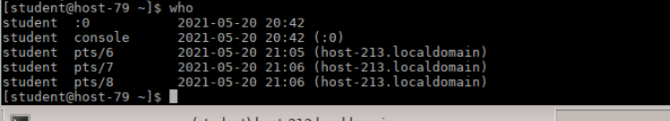

Для выполнения этой лабораторной работы потребуется 2 компьютера, между которыми будет происходить соединение по ssh(действия, описанные ниже необходимо проделывать на обоих компах).
- Для начала необходимо зайти в центр управления системой, где нужно будет установить настройку IP вручную и добавляем ip-адрес:
- Выполнить команду igconfig:
- Выполнить команду hostname:
- Далее необходимо отредактировать файл hosts(/etc/hosts), вводим наш ip-адрес и хостнейм и второго пк, с которым будет происходить соединение:
- Подключение по ssh по длинному и короткому имени:
- Проверка пользователей в сети с помощью команды who
